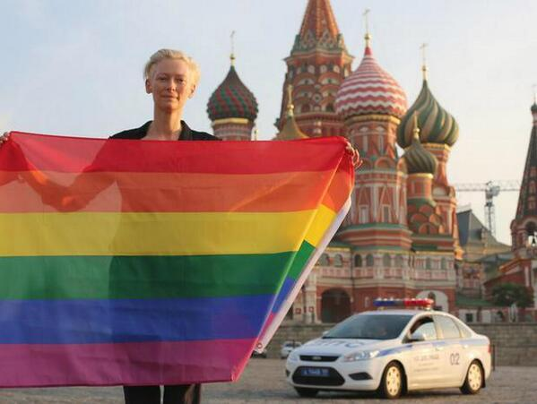
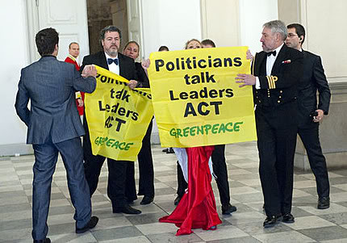

- Non tutti possono godere dello stesso modello di sicurezza
- Anche i contesti più delicati sono in mano a persone che hanno una vita digitale a barriere abbassate

L'effetto è di rendere la protezione più difficile
E le aspettative dell'utente sono un po' vincolanti...
- Tutti i tuoi contesti "affiancati"
- Capacità di potenziare i dispositivi
- Tutto subito!
- Poter abbassare l'allerta in certe condizioni

Profilo di rischio: Alto
Reti: Lavorativa/Editoriale, Personale
Training: possibile
Reti: Lavorativa/Editoriale, Personale
Training: possibile

L'autocensura avviene vorresti rivolgerti con un registro, standard, idee scelte per le interlocutrici.
La creazione di identità multiple è correntamrnte osteggiata, ed i meccanismi di associazione che un fornitore di servizio ha per ricollegarti, sono maggiori di quello che vediamo.
Ma almeno, all'intenro del Social Network e dell'analisi esterna, delle identità possono non essere correlate.

Attacchi mirati sfruttano anche ambienti sociali diversi
Ad esempio, amicizie impersonate perchè lavori in una specifica azienda

Profilo di rischio: Medio
Reti: Pubblica (ma con identità riservata sacrificabile ?)
Training: minimale
Risorse: cross-nazionalità di Internet
Reti: Pubblica (ma con identità riservata sacrificabile ?)
Training: minimale
Risorse: cross-nazionalità di Internet

Profilo di rischio: Medio/Alto?
Reti: Personale + Aperta
Rischio: se sono chiuso, sto da solo. se sono aperto, vengo attaccato o infiltrato.
Reti: Personale + Aperta
Rischio: se sono chiuso, sto da solo. se sono aperto, vengo attaccato o infiltrato.